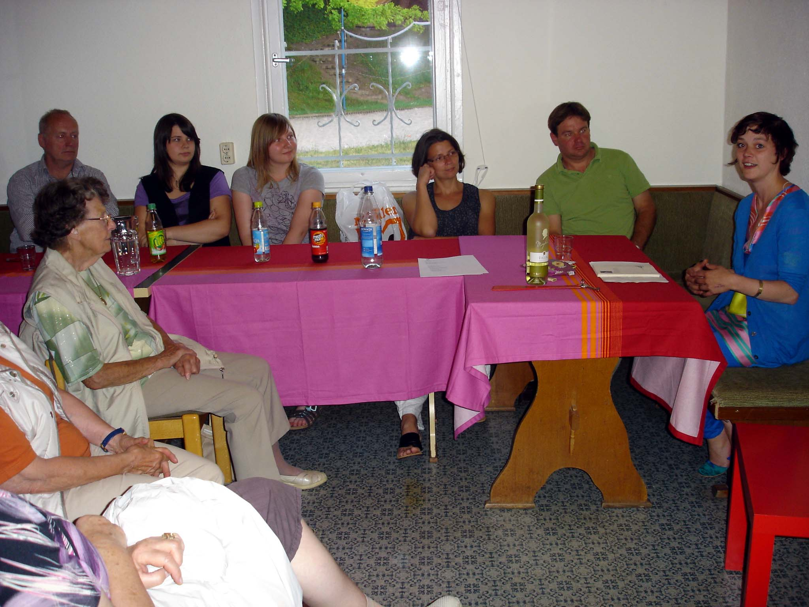
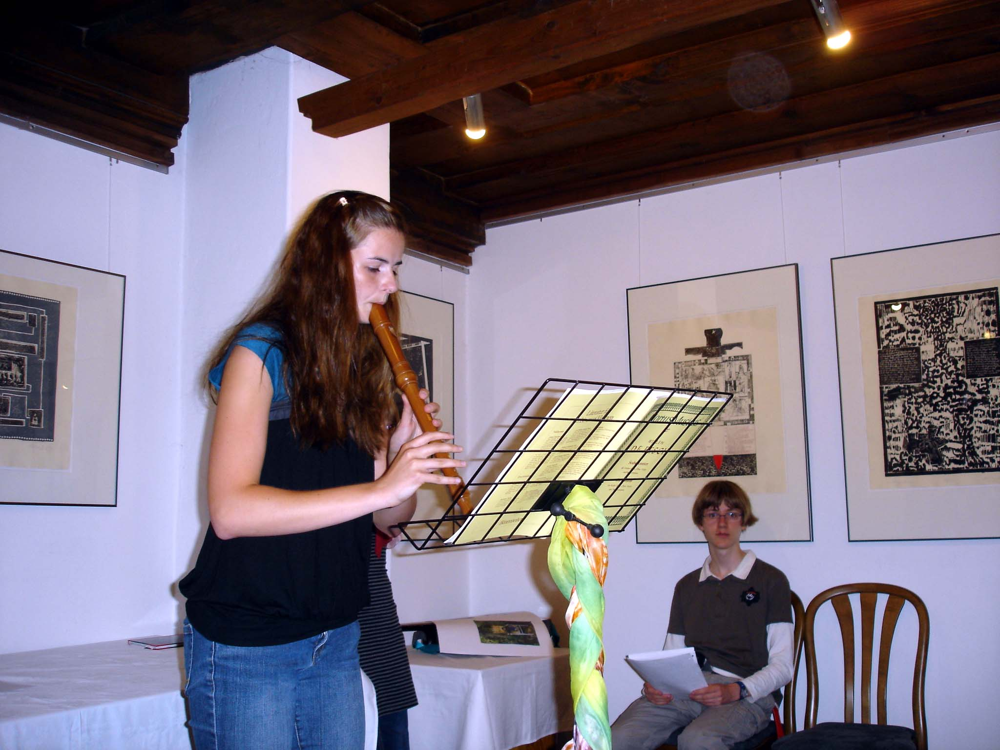
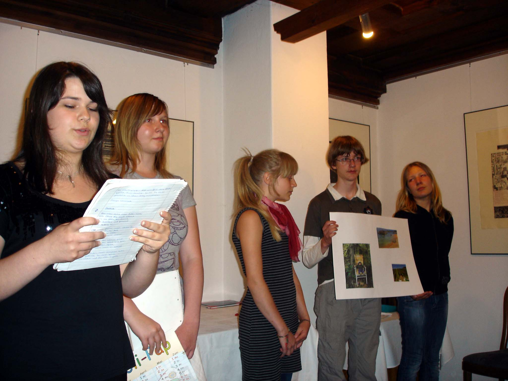

Die 22. Werkstatttage des Südthüringer Literaturvereins bargen Neuheiten. Die neue Mannschaft im inzwischen umbenannten Jugendgästehaus „Mittendrin" setzte alles daran, die Autoren bestens zu versorgen. So startete die Werkstatt mit einer von Ulrike Blechschmidt und Manuela Ploch vorbereiteten Vorstellungsrunde für alle. Dann gab es eine unheimlich große Lyrikgruppe – weil Nancy Hünger aus Erfurt als Lektorin und Seminarleiterin gewonnen werden konnte. Mit unglaublicher Geduld und ebenso unglaublicher Präzision widmete sie sich den Texten der Autoren. Intensives Arbeiten war angesagt, an mitgebrachten Texten und zum diesjährigen Thema „Orts(un)kundig". Die Prosagruppe führte wieder Sandra Eberwein. Nach der Lesung am Samstagabend im Baumbachhaus, musikalisch bereichert von Flötistin Juliane Ketzer und Liedermacher Bernd Friedrich, gab es am Sonntagvormittag eine Neuheit: Cornelia Thiele vom KIECK-Theater Weimar führte in den Dschungel der Auftrittskunst ein.




